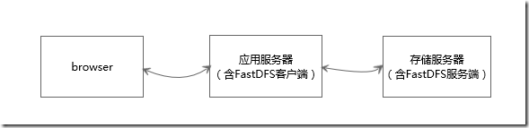

存储文件时，为了节省存储空间，需要实现文件去重，即同一份文件只在服务器上存储一份。一种实现是文件上传后先落到应用服务器上，计算MD5并存储到数据库中，然后决定是否上传存储服务器。这样做的缺点是应用服务器端需要做并发控制，实现相对来说比较复杂。

FastDFS本身支持文件的排重处理机制，但需要FastDHT作为文件hash的索引存储。FastDHT是FastDFS同一个作者的开源key-value数据库。其排重原理为：
FastDFS的storage server每次上传均计算文件的hash值，然后从FastDHT服务器上进行查找比对，如果没有返回，则写入hash，并将文件保存；如果有返回，则建立一个新的文件链接（软链），不保存文件。
经过测试集成FastDHT后，FastDFS可以实现文件去重，这样在fastdfs的客户端就不需要做额外的并发控制，可以减少很大一部分工作量。但是当前FastDFS去重功能是跟FastDHT绑定起来的，暂时不支持其他的K-V库，而且FastDHT网上的资料较少，如果hold不住它的源码（c语言实现），用起来还是存在很大风险的。